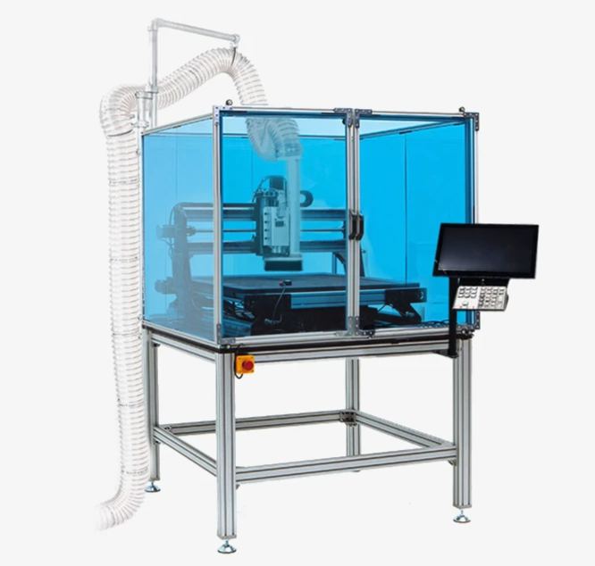

SOP for the Mekanika Pro Education Pack CNC milling machine

1. Purpose
To ensure safe and efficient operation of the Mekanika Pro CNC milling machine within educational or public spaces, preventing accidents and ensuring high-quality results.
2. Scope
Applies to all operators, supervisors, and maintenance personnel responsible for using or servicing the CNC mill at premises of GHE, ETH Zurich.
3. Responsibilities
- Operators: Follow all procedures and safety guidelines.
- Supervisors: Ensure all staff are trained and SOPs are followed.
- Maintenance: Carry out routine checks and preventive maintenance.
4. Required Equipment
- Mekanika Pro CNC mill + PC & VFD spindle
- Tooling: end mills, collets, wrenches
- Spoilerboard, safety enclosure, dust shoe and dust collection system
- PPE: safety glasses, hearing protection, dust mask
- Clamping/tools for workpiece
- Measurement instruments: calipers, gauges
- Appropriate lubricants/coolants if needed
5. Safety Precautions
- Always wear appropriate PPE: safety glasses, gloves, and hearing protection.
- Ensure the safety enclosure is fully closed before starting any operation. The enclosure doors are interlocked to trigger an emergency stop if opened.
- Never bypass safety interlocks.
- Check that emergency stops and all controls are working before use.
- Keep the area clean, dry, and well-lit.
- Only trained personnel are permitted to operate the CNC mill.
6. Pre-Operation Procedure
- Inspect Machine:
- Check for any visible damage, loose or missing parts.
- Ensure the worktable and spoilerboard are clear of debris.
- Confirm all guards/enclosures are in place and secure.
- Prepare Tooling:
- Select appropriate end mill and collet size.
- Inspect the tool for wear or damage.
- Install end mill into spindle using both provided wrenches.
- Prepare Workpiece:
- Attach securely to the spoilerboard/worktable using appropriate clamps. Double-check tightness.
- Set Up Dust Collection:
- Attach dust shoe and connect the dust extraction system.
- Ensure vacuum is functional before starting spindle.
- Power Up:
- Turn on the CNC machine and control PC. Confirm all system lights/status indicators are normal.
7. Operation
- Load/Check Program:
- Load G-Code file via touchscreen, USB, or network connection.
- Double-check that the program matches the intended job (material, tool diameter, etc.).
- Pre-Run Checks:
- Use ‘dry run’ (without spindle engaged or at reduced speed) to verify there are no collisions in the toolpath.
- Visually confirm the machine moves as expected.
- Start Job:
- Ensure all operators/observers are clear.
- Start dust collection system.
- Start spindle and machining program via control interface.
- Monitor operation; remain alert for unusual noises, vibrations, or errors.
8. Emergency Procedures
- Use the EMERGENCY STOP button or open the enclosure door to stop the machine immediately if a hazard arises.
- Report any incident to the supervisor and do not resume operation until the cause is identified and fixed.
9. Post-Operation
- Job Completion:
- Wait for all movement to stop, then remove finished part.
- Inspect both part and tooling for issues.
- Clean-Up:
- Use vacuum to clear debris from machine and work area.
- Remove and store tools, collets, and clamps properly.
- Shutdown:
- Turn off spindle, dust collector, and CNC system.
- Power down the control PC.
- Ensure enclosure is closed and workspace is tidy and safe.
10. Maintenance
- Perform regular checks on spindle, tool holders, and safety features.
- Inspect dust filters and empty collection bins as required.
- Log maintenance in provided records or checklists.